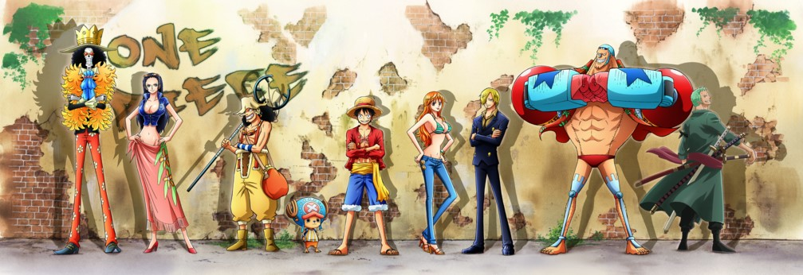

| 网站首页 | TV版目录 | 角色资料 | 精选壁纸 | 衍生作品 | 果实大全 | 海贼论坛 | 关于我 |
|---|
航海王动漫
🔥热度
4937
9.3分
原名： one piece
别名：海贼王;海盗路飞;海盗鲁夫;海盗王
地区： 日本
时间：1999
语言： 日语
导演： 暂无
类型： 热血 / 励志 / 冒险
更新时间： 第930集延期播出
简介：《ONE PIECE》（海贼王、航海王），由东映动画改编自尾田荣一郎创作漫画的同名动画。于1999年10月20日在日本富士电视台开始播放，至今仍在播放中。故事描写了拥有橡皮身体戴草帽的青年路飞
，以成为海贼王为目标和同伴在大海展开冒险的故事。
| 篇章 | 章节 | 集数 | BOSS | 海贼团情况 |
|---|---|---|---|---|
| 东海冒险篇 | 海贼和小偷 | 1～9话 | 亚尔丽塔，斧手蒙卡，小丑巴基 | 罗罗诺亚·索隆加入，娜美合作 |
| 不虚假的事 | 9~19话 | 克洛船长 | 乌索普加入 黄金梅丽号起航 | |
| ALL BLUE之梦 | 20~30话 | 提督克利克 | 娜美离开，山治加入 | |
| 橘子和风车 | 31~45话 | 锯齿阿龙 | 娜美加入 | |
| 巴基历险记 | 46~47话 | |||
| 伟大传说的开始 （罗格镇篇） | 48~53话 | 白色猎人斯摩格 | ||
| 千年龙传说 | 54~60话 | 镰刀鼬鼠艾力克 | ||
| 东海冒险篇 | 威士忌山峰篇 | 61~67话 | 薇薇公主加入 | |
| 海军奋斗记篇 | 68~69话 | |||
| 巨人的小花园 | 70~77话 | MR.3 | ||
| 磁鼓岛篇 | 78~91话 | 瓦尔波 | 托尼托尼·乔巴加入 | |
| 阿拉巴斯坦篇 | 92~130话 | 克洛克达尔 | 薇薇公主留在了阿拉巴斯坦，妮可·罗宾加入 | |
| TV原创篇 | TV原创短篇 | 131~135话 | ||
| 高利贷的塞尼 | 136~138话 | 冥奇上尉 | ||
| 彩虹色的雾 | 139~143话 | 威顿 | ||
| 空岛篇 | 加雅岛篇 | 144~151话 | 鬣狗贝拉米 | |
| 空岛前篇 | 152~166话 | |||
| 空岛后篇 | 167~195话 | 神·艾尼路 | ||
| 海军要塞G8 | 海军要塞G8 | 196~206话 | ||
| 长链岛篇 | 长链岛篇 | 207~219话 | 银狐福克西 | |
| 失忆篇 | 220~226话 | 长得像海马的怪物，银狐福克西 | ||
| 司法之岛事件篇 | 水之七都前篇 | 227~241话 | 乌索普退出， 黄金梅丽号给予乌索普， 妮可·罗宾退出 | |
| 罗宾争夺战篇 | 242~262话 | 弗兰奇、狙击王（乌索普）参战 | ||
| 司法之岛篇 | 263~312话 | 罗布·路奇 | 妮可·罗宾加入，黄金梅丽号火葬 | |
| 水之七都后篇 | 313~325话 | 罗布·路奇 | 弗兰奇加入，乌索普加入，萨乌森·桑尼号（万里阳光号 ）起航 | |
| 旗帜猎人篇 | 旗帜猎人篇 | 326~335话 | 顿·阿奇诺 | |
| 乔巴超人特别篇 | 336话 | 乌索达巴达 | ||
| 恐怖三桅帆船篇 | 恐怖三桅帆船前篇 | 337~354话 | ||
| 恐怖三桅帆船后篇 | 355~381话 | 魔人僵尸奥兹， 月光·莫利亚，巴索罗缪·大熊 | 布鲁克加入 | |
| SpaIsland号篇 | SpaIsland号篇 | 382~383话 | ||
| 香波地群岛篇 | 迪巴鲁篇 | 384~389话 | ||
| 天龙人事件篇 | 390~405话 | 黄猿， 战桃丸 | 全员分散 | |
| 时代剧特别篇 | 406~407话 | |||
| 女儿岛篇 | 女儿岛篇 | 408~417话 | 波雅·桑达索妮娅 ， 波雅·玛丽格尔德 | |
| 伙伴行踪前篇 | 418~421话 | |||
| 营救艾斯篇 | Impel Down前篇 （海底监狱前篇） | 422~440话 | 拉鲁戈 | |
| Impel Down后篇 （海底监狱后篇） | 441~452话 | 毒人麦哲伦 | ||
| 伙伴行踪后篇 | 453~456话 | |||
| 海军本部篇 | 海军本部篇（顶上战争） | 457~489话 | ||
| 顶上战争（大事件）后篇 | 490~491话 | |||
| 海贼王×美食猎人 特别联合篇 | 492话 | |||
| 兄弟相遇的回忆篇 | 493~504话 | |||
| 新世界前篇 | 新世界前篇 | 505~516话 | ||
| 鱼人岛篇 | 伙伴重聚篇 | 517~522话 | G1支部, 战桃丸,和平主义者, 伪草帽海贼团 | 全体船员回归 |
| 鱼人岛篇 | 523~541话 | |||
| 海贼王×美食猎人特别联合篇2 | 542话 | |||
| 鱼人岛篇 | 543~574话 | 霍迪·琼斯 | ||
| Z的野心篇 | Z的野心篇 | 575~578话 | 修佐 | |
| 庞克哈萨德篇 | 燃烧岛篇 | 579~589话 | M·凯撒·库朗 | |
| 美食的俘虏x海贼王x龙珠Z | 590话 | |||
| 燃烧岛篇 | 591~625话 | M·凯撒·库朗, 维尔戈 ,多弗朗明哥 | ||
| 宠物果实能力者篇 | 宠物果实能力者篇 | 626~628话 | 布里德 | |
| 德雷斯罗萨篇 | 宠物果实能力者篇 | 629~746话 | 堂吉诃德·多弗朗明哥 , 【藤虎】一笑 | |
| 银之要塞篇 | 银之要塞篇 | 747~750话 | 银之毕鲁 | 和巴托俱乐部同行 |